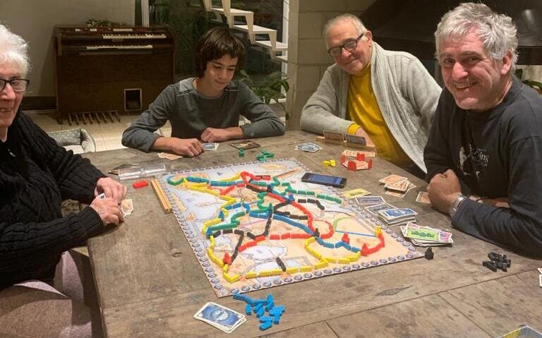

Ticket to Ride: One of the absolute best board games ever!
Ticket to Ride is one of the best board games ever! It is an absolute favorite to play with family or friends! Even if you own one game board you never get tired of playing it over and over.
If you have never played the game I suggest you watch this quick video to learn the game.
Why "Time to count"?
The rules indicate that route points are to be counted during gameplay, as the routes are built. I have found that it is more enjoyable to count these points at the end of the game. I believe moving the score trackers during gameplay distracts from the esence of what is the most fun of the game. The game is best enjoyed in a fast pace where everyone is very much submerged in their world of keeping track of destination tickets and making the critical decision every turn.
- Do I get more train car cards to build may routes quickly, or do I quickly build that route before someone else gets it?
- Does building this route give away the path I am building?
- Are any of the available car train card colors any good for my plans, or do I get more destination tickets to try to score more points?
If you stop every time you build a route to move your score tracker you get a bit distracted from thinking about all these decisions you can take.
It seems that many other players around the world also believe that counting points at the end is the best way to enjoy the game. With the "Time to count" app this is done smoothly and the app helps avoid errors. Install the Time to count app directly from the Google Play Store!

The "Time to count" app makes it much easier to add up points for the Ticket to Ride game. You can add the names of the players that play the games. The app also keeps history of all played games and shows best scores in each game board variant.
Enjoying every moment of play
Let's be realistic, it isn't always easy to find the time to play a Ticket to Ride game. And you not only need time, you need other players to be with you and have the time to play.
Deciding on playing a game is to start to enjoy this game. If you have more than one game board then you can decide which one to play. You might even have to decide where in the house to play.
Before you actually start playing you have to set the board, decide on how to sit around the table and who goes first! This is the first part of enjoying the time with family or friends to play Ticket to Ride.
After all the preparations are done comes the meat of it all. It is the time for gameplay. Get car train cards, build routes and complete as many destination tickets as you can! A fast and exciting moment of adrenaline from all the competition! This goes on until that last turn when someone takes that leap of faith and finishes his or hers car trains hoping to beat the rest.
That's when "Time to count" comes in! Now everyone helps out in getting all the routes, destination tickets and bonus info in to see how the players rank with their final scores. This is the last moment of the game and to be enjoyed like all the rest of the moments!
Simple app mechanics
The app knows all the differences for each game board variant. So all you have to do is input the information on how each player played and the scores are done automatically. So, once the game is done then you turn on the "Time to count" app.
You can input information in any order you want, but it seems natural to do routes first, then destination tickets and last bonuses.
For routes, you input all the routes of each player at a time. You look at the board and with a simple tap you enter every route built. The app shows you the points scored for routes. The app knows how many train cars are in game for each game board variant, so it conveniently shows how many unused train cars. This helps make a check at the end to see that it matches the number of actual unused train cars. Even for variants that count routes differently we use the same mechanic. Later we explain in detail each variant.
Destination tickets are also done per player. Looking at the board you first check which destination tickets were completed and which where not. You then go to the app that shows buttons with the ticket points. Since the app knows every game board variant you are shown only the points for that variant. You input completed destination tickets and those that went uncompleted as well. You tap on the buttons for complete and incomplete to switch between these.
Bonuses for all extensions made easy
Every variant has some bonus points awarded. A few are awarded with no need to input more information, but most require input. You can see the bonus points awarded on the Bonus Screen. Some bonuses are awarded to players who have the most of something. For example the globetrotter bonus for the most complete destination tickets. For these bonuses the app has the All Players button that allows you to see how all players rank to obtain the bonus.
The globetrotter bonus is automatically awarded to the player (or players in case of a tie) that have the most completed destination tickets. The app knows how many points to award for each game board variant.
The default method for the long route bonus is to input for each player the longest route in train cars. The app awards the game variant's bonus points for long route the the player(s) with the longest route. The other option is to simply mark in the app who are the players with the longest route so the app awards the corresponding bonus. In the app options screen you can decide for what method to use.
The Europe variant has the stations that need to be counted for bonus points. Indicate how many stations were used and the app will award 4 points per each unused station as bonus.
The Märklin variant include the merchandise tokens bonus. Input the final number of merchandise tokens per each player.

For the Rails and Sails game boards the ports give bonus points. Input for each port how many destination tickets were completed and bonus points are awarded according to the bonus table for each game board. If any player exchanged pieces during the game, he enters the number of pieces as this affects his score; he loses one point per exchanged piece.
The Germany game board awards points for passengers. At the end of the game input how many passengers for each color each player has. The app awards points according to the rules.
For the Asia game board indicate how many train cars were used for mountain routes. The app awards 2 points per train car used for mountains. The app considers also counts the train cars set aside because of mountain routes for the purpose of checking how many were left unused at the end of the game.
The India game board offers players the change to win the Grand Tour Bonus according to mandalas built. For each player input the amount of destination tickets completed inside a mandala and the app awards the bonus according to the table in the rules.
For the Heart of Africa the bonuses are awarded for building routes using terrain cards. In order to be able to count points at the end, for this variant we need to take note during the game. So you need a bit of paper and a pen or pencil. The recommended way of taking note is to draw a table with the player names in the first column, and then have columns for each route length: 1 to 6. Only take note at the time a route is built with terrain cards. You just put a tick mark in the cell for the player and route length. So at the game end you input in the app for each player how many routes were completed using terrain cards for each route length. The app awards the extra points for these routes.
The Nederland game board gives out bonuses according to loans and toll tokens. Input for each player the amount of loans requested and/or toll tokens. The app automatically awards penalties when loans are requested. If a player did not request a loan then the player is awarded a bonus for toll tokens according to the table in the game rules.
The United Kingdom variant is the most complex variant in terms of bonuses. For these bonuses to be calculated indicate for each player which of the technology cards that award points were bought. There are two cards that would require that points be counted during game play. In order to count all points at the end then it is required to take note of some simple information.
If the Steam Turbines card is bought by a player you need to take note of how many ferries where built at the time the card is bought. At the time to count moment you enter that number and the total number of built ferries. The app awards the corresponding bouns for ferries built after the card was bought.
Similarly, if the Double Heading card is bought the information for routes built at the time the card is bought needs to be noted. At the time to count moment, the correspoding award is given for all routes built after the card was bought.
If a player buys the Equalising Beam card then the information for longest route must be completed just as it would be for a variant with the longest route bonus.
The Pennsylvania game board variant has bonuses awarded according to shares owned by players. Enter for each player how many shares they have for each share type and also which is the first share of the type the player bought (the lowest numbered share). This is used for determing who gets more points in case of a tie in number of shares. The app awards the shares bonus according to the rules.
The Old West variant is the most tricky variant in order to be able to count points at the time to count moment. Since points are awarded differently when a route has cities in one or both of it's ends then it is requied to take note how the points are ro be awarded differently than it would be if no cities were present. So, for this variant you need to paper and pen to take note during gameplay.
The recommended way of taking note is to draw a table with the player names in the first column, and then have another column for taking note of points. Only take note at the time a route is built with cities. If the route has another player's city then put the value in points with a plus sign for the player(s) owning the city. If the player who built the route also has a city then you do not need to take special note because the route needs to be counted for normally; but if the player does not own a city then you need to put the point value for that route with a negative sign for that player. This is done to substract the points that will be counted at the end. So at the game end you just input the sum of all the numbers you input for each player during game play.
Links
You can find all the game rules in PDF and information by the the Ticket To Ride board game publisher in the Days of Wonder official website.
A good forum on the Ticket to Ride board game si the Fandom Ticket to Ride Forum.
A helpful site for learning the Ticket to Ride game is the Daroolz Ticket to Ride webpage.
Read the BoardGameGeek Ticket to Ride webpage for the most complete reviews, forums and lots of information on the game.